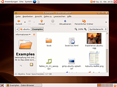
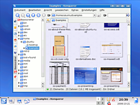

Steckbriefe der Ubuntuversionen
Dieser Artikel soll eine Kurzübersicht aller bisher erschienenen Ubuntu-Versionen zeigen. Er soll den Artikel Ubuntu/Releases nicht ersetzen, sondern qualitativ ergänzen. Die nachfolgenden Übersichten zeigen ausschließlich Informationen zur Kernel-, GNOME- und KDE-Version, Angaben zum X-Server und verschiedener Softwarepakete sowie etwaiger Besonderheiten oder Neuigkeiten. Umrahmt werden diese Informationen von Bildern der jeweiligen Ubuntu- und Kubuntuversion.
Querverweise¶
Für eine (chronologische) Übersicht aller bisher erschienenen Wallpaper (Desktophintergründe) von Ubuntu und den offiziellen Varianten sowie der Möglichkeit des Downloads bietet sich der Artikel Ubuntu-Wallpaper an. Der Artikel Ubuntu/Releases konzentriert sich auf Themen wie Veröffentlichungs- und Unterstützungszeiträume.
Erste Generation¶
Die erste Generation, welche mit „Warty Warthog“ begann und bis zur ersten LTS-Version („Dapper Drake“) andauerte, kann man mit Fug und Recht als Meilenstein in der Linux-Geschichte bezeichnen: „Ubuntu konnte seit dem Erscheinen der ersten Version im Oktober 2004 seine Bekanntheit stetig steigern und ist derzeit die bekannteste und meistgenutzte Linux-Distribution. (...) Dies liegt vor allem auf dem Schwerpunkt Ubuntus: der Benutzerfreundlichkeit.“ (Quelle: Ubuntu)
Ubuntu 4.10 (Warty Warthog)¶
| Ubuntu 4.10 „Warty Warthog“ („Warziges Warzenschwein“) | |||
| 4.10 mit GNOME | Informationen | keine KDE-Version verfügbar | |
 | Kernel: | 2.6.8 | |
| GNOME: | 2.08 | ||
| KDE: | -- | ||
| Grafik: | XFree86 4.3. | ||
| Software: | Firefox 0.9, OpenOffice.org 1.1, Gaim 1.0, GIMP 2.0 | ||
| Neuigkeiten: | erste Version überhaupt | ||
| Besonderes: | ShipIt  | ||
| Unterstützung: | 20.10.2004 - 30.04.2006 | ||
Ubuntu 5.04 (Hoary Hedgehog)¶
| Ubuntu 5.04 „Hoary Hedgehog“ („Ergrauter Igel“) | |||
| 5.04 mit GNOME | Informationen | 5.04 mit KDE | |
| Kernel: | 2.6.10 | ||
| GNOME: | 2.10 | ||
| KDE: | 3.4 | ||
| Grafik: | X.Org 6.8 | ||
| Software: | Firefox 1.0, OpenOffice.org 1.1, Gaim 1.5, GIMP 2.2 | ||
| Neuigkeiten: | Update-Manager und -Notifier, Schlafmodi, UTF-8 als Standard | ||
| Besonderes: | erstmals Kubuntu, Installation von USB-Laufwerken | ||
| Unterstützung: | 08.04.2005 - 31.10.2006 | ||
Ubuntu 5.10 (Breezy Badger)¶
| Ubuntu 5.10 „Breezy Badger“ („Frecher Dachs“) | |||
| 5.10 mit GNOME | Informationen | 5.10 mit KDE | |
| Kernel: | 2.6.12 | ||
| GNOME: | 2.12 | ||
| KDE: | 3.4.3 | ||
| Grafik: | X.Org 6.8 | ||
| Software: | Firefox 1.0, OpenOffice.org 2.0, Gaim 1.5, GIMP 2.2 | ||
| Neuigkeiten: | Usplash, Alacarte, HPLIP, OEM-Support | ||
| Besonderes: | -- | ||
| Unterstützung: | 12.10.2005 - 13.04.2007 | ||
Ubuntu 6.06 LTS (Dapper Drake)¶
| Ubuntu 6.06 LTS „Dapper Drake“ („Eleganter Erpel“) | |||
| 6.06 mit GNOME | Informationen | 6.06 mit KDE | |
|  | Kernel: | 2.6.15 |  |
| GNOME: | 2.14 | ||
| KDE: | 3.5.2 | ||
| Grafik: | X.Org 7.0 | ||
| Software: | Firefox 1.5, OpenOffice.org 2.0, Gaim 1.5, GIMP 2.2 | ||
| Neuigkeiten: | Ubiquity, Usplash (Shutdown), NetworkManager, Human-Theme, GDebi | ||
| Besonderes: | 6.06 ist die erste „Long Term Support“-Version, Live- und Install-CD erstmals auf einer CD, zwei Monate verspätet | ||
| Unterstützung: | 01.06.2006 - 14.07.2009 (Deskcenter), 01.06.2011 (Server) | ||
Zweite Generation¶
Nach vier Versionen markierte „Edgy Eft“ den Beginn des zweiten Release-Zyklus. Dieser endete mit der zweiten LTS-Version namens „Hardy Heron“.
Ubuntu 6.10 (Edgy Eft)¶
| Ubuntu 6.10 „Edgy Eft“ („Nervöser Molch“) | |||
| 6.10 mit GNOME | Informationen | 6.10 mit KDE | |
| Kernel: | 2.6.17 | ||
| GNOME: | 2.16 | ||
| KDE: | 3.5.5 | ||
| Grafik: | X.Org 7.1 | ||
| Software: | Firefox 2.0, OpenOffice.org 2.0, Gaim 2.0, GIMP 2.2 | ||
| Neuigkeiten: | modifiziertes Human-Theme, Upstart, Apport, Tomboy, F-Spot | ||
| Besonderes: | EasyUbuntu als Meta-Package verfügbar | ||
| Unterstützung: | 26.10.2006 - 25.04.2008 | ||
Ubuntu 7.04 (Feisty Fawn)¶
| Ubuntu 7.04 „Feisty Fawn“ („Lebhaftes Rehkitz“) | |||
| 7.04 mit GNOME | Informationen | 7.04 mit KDE | |
 | Kernel: | 2.6.20 |  |
| GNOME: | 2.18 | ||
| KDE: | 3.5.6 | ||
| Grafik: | X.Org 7.2 | ||
| Software: | Firefox 2.0, OpenOffice.org 2.2, Gaim 2.0, GIMP 2.2 | ||
| Neuigkeiten: | Migrationsassistent für Windows-Nutzer, KVM, Automatisierte Codec-Installation, Compiz, WPA | ||
| Besonderes: | Supportende für PowerPC-Architektur | ||
| Unterstützung: | 19.04.2007 - 19.10.2008 | ||
Ubuntu 7.10 (Gutsy Gibbon)¶
| Ubuntu 7.10 „Gutsy Gibbon“ („Mutiger Gibbon“) | |||
| 7.10 mit GNOME | Informationen | 7.10 mit KDE | |
| Kernel: | 2.6.22 | ||
| GNOME: | 2.20 | ||
| KDE: | 3.5.8 | ||
| Grafik: | X.Org 7.2 | ||
| Software: | Firefox 2.0, OpenOffice.org 2.3, Pidgin 2.2, GIMP 2.4 | ||
| Neuigkeiten: | AppArmor, Tracker, Ubufox, grafisches Konfigurations-Tool für X.org, NTFS-3G, Compiz Fusion, Fast-User-Switch-Applet | ||
| Besonderes: | -- | ||
| Unterstützung: | 18.10.2007 - 18.04.2009 | ||
Ubuntu 8.04 LTS (Hardy Heron)¶
| Ubuntu 8.04 LTS „Hardy Heron“ („Kühner Reiher“) | |||
| 8.04 mit GNOME | Informationen | 8.04 mit KDE | |
| Kernel: | 2.6.24 | ||
| GNOME: | 2.22 | ||
| KDE: | 3.5.9 und SC 4.0 | ||
| Grafik: | X.Org 7.3 | ||
| Software: | Firefox 3.0 beta, OpenOffice.org 2.4, Pidgin 2.4, GIMP 2.4 | ||
| Neuigkeiten: | PulseAudio, Wubi, Brasero, Transmission, Vinagre | ||
| Besonderes: | 8.04 ist die zweite „Long Term Support“-Version | ||
| Unterstützung: | 24.04.2008 - 23.04.2011 (Desktop), 9.05.2013 (Server) | ||
Dritte Generation¶
„Hardy Heron“ bildet den Abschluss der zweiten Generation. Mit „Intrepid Ibex“ begann ein neuer Entwicklungszyklus, welcher sich abermals über vier Versionen erstreckte und im April 2010 mit „Lucid Lynx“ wieder in eine LTS-Version mündete.
Ubuntu 8.10 (Intrepid Ibex)¶
| Ubuntu 8.10 „Intrepid Ibex“ („Unerschrockener Steinbock“) | |||
| 8.10 mit GNOME | Informationen | 8.10 mit KDE | |
| Kernel: | 2.6.27 | ||
| GNOME: | 2.24 | ||
| KDE SC: | 4.1.2 | ||
| Grafik: | X.Org | ||
| Software: | Firefox 3.0, OpenOffice.org 2.4, Pidgin 2.5, GIMP 2.6 | ||
| Neuigkeiten: | Live-USB-Creator, verschlüsseltes Homeverzeichnis, DKMS | ||
| Besonderes: | Fast-User-Switch-Applet ersetzte erstmals den Logout-Button | ||
| Unterstützung: | 30.10.2008 - 30.04.2010 | ||
Ubuntu 9.04 (Jaunty Jackalope)¶
| Ubuntu 9.04 „Jaunty Jackalope“ („Lebhafter Jackalope“) | |||
| 9.04 mit GNOME | Informationen | 9.04 mit KDE | |
| Kernel: | 2.6.28 | ||
| GNOME: | 2.26 | ||
| KDE SC: | 4.2 | ||
| Grafik: | X.Org 7.4 | ||
| Software: | Firefox 3.0, OpenOffice.org 3.0, Pidgin 2.5, GIMP 2.6 | ||
| Neuigkeiten: | Notify-OSD, Netbook-Unterstützung, neuer Usplash | ||
| Besonderes: | Verkürzung der Bootzeit | ||
| Unterstützung: | 23.04.2009 - 22.10.2010 | ||
Ubuntu 9.10 (Karmic Koala)¶
| Ubuntu 9.10 „Karmic Koala“ („Karmischer Koala“) | |||
| 9.10 mit GNOME | Informationen | 9.10 mit KDE | |
| Kernel: | 2.6.31 | ||
| GNOME: | 2.28 | ||
| KDE SC: | 4.3 | ||
| Grafik: | X.Org 7.4 | ||
| Software: | Firefox 3.5, OpenOffice.org 3.1, Empathy 2.28, GIMP 2.6 | ||
| Neuigkeiten: | GRUB 2, X-Splash, Empathy ersetzt Pidgin, Ubuntu One | ||
| Besonderes: | Weitere Verkürzung der Bootzeit | ||
| Unterstützung: | 29.10.2009 - 29.04.2011 | ||
Ubuntu 10.04 LTS (Lucid Lynx)¶
| Ubuntu 10.04 LTS „Lucid Lynx“ („Heller Luchs“) | |||
| 10.04 mit GNOME | Informationen | 10.04 mit KDE | |
| Kernel: | 2.6.32 (LTS) |  | |
| GNOME: | 2.30 | ||
| KDE SC: | 4.4 | ||
| Grafik: | X.Org 7.5 | ||
| Software: | Firefox 3.6, Thunderbird 3.0, OpenOffice.org 3.2, Empathy 2.30 | ||
| Neuigkeiten: | nouveau-Grafik, Light-Design | ||
| Besonderes: | Weitere Verkürzung der Bootzeit, dritte LTS-Version, neues Desktop-Design (nur Ubuntu) | ||
| Unterstützung: | 29.04.2010 - 9.05.2013 (Desktop), 29.04.2015 (Server) | ||
Vierte Generation¶
„Lucid Lynx“ bildet den Abschluss der dritten Generation. Mit „Maverick Meerkat“ begann ein neuer Entwicklungszyklus, welcher sich erneut über vier Versionen erstreckte und im April 2012 wieder in eine LTS-Version mündete.
Ubuntu 10.10 (Maverick Meerkat)¶
| Ubuntu 10.10 „Maverick Meerkat“ („Eigensinniges Erdmännchen“) | |||
| 10.10 mit GNOME | Informationen | 10.10 mit KDE | |
| Kernel: | 2.6.35 | ||
| GNOME: | 2.32 | ||
| KDE SC: | 4.5 | ||
| Grafik: | X.Org 7.5 | ||
| Software: | Firefox 3.6, Thunderbird 3.1, OpenOffice.org 3.2, Empathy 2.32 | ||
| Neuigkeiten: | Shotwell ersetzt F-Spot, Multitouch | ||
| Besonderes: | Neue Netbook-Oberfläche (Unity) | ||
| Unterstützung: | 10.10.2010 - 10.04.2012 | ||
Ubuntu 11.04 (Natty Narwhal)¶
| Ubuntu 11.04 „Natty Narwhal“ („Schicker Narwal“) | |||
| 11.04 mit Unity | Informationen | 11.04 mit KDE | |
| Kernel: | 2.6.38 | ||
| Unity: | 3.8.10 | ||
| GNOME: | 2.32 | ||
| KDE SC: | 4.6 | ||
| Grafik: | X.Org 7.6 | ||
| Software: | Firefox 4.0, Thunderbird 3.1.9, Libreoffice 3.3.2, Empathy 2.32 | ||
| Neuigkeiten: | Banshee ersetzt Rhythmbox, Remmina ersetzt Vinagre, LibreOffice ersetzt OpenOffice.org | ||
| Besonderes: | Unity als Standarddesktop, keine UNE mehr | ||
| Unterstützung: | 29.04.2011 - 28.10.2012 | ||
Ubuntu 11.10 (Oneiric Ocelot)¶
| Ubuntu 11.10 „Oneiric Ocelot“ („Verträumter Ozelot“) | |||
| 11.10 mit Unity | Informationen | 11.10 mit KDE | |
| Kernel: | 3.0 | ||
| Unity: | 4.22 | ||
| Unity 2D: | 4.12 | ||
| GNOME: | 3.2 | ||
| KDE SC: | 4.7.1 | ||
| Grafik: | X.Org 7.6 | ||
| Software: | Firefox 7, Thunderbird 7, LibreOffice 3.4.3 | ||
| Neuigkeiten: | LightDM als Displaymanager, Déjà Dup als Datensicherungsprogramm, Thunderbird als Standard-Mailclient | ||
| Besonderes: | erstmals ist Lubuntu als offiziell anerkanntes Ubuntu-Derivat verfügbar, Synaptic und PiTiVi werden nicht mehr automatisch installiert | ||
| Unterstützung: | 13.10.2011 - 9.05.2013 | ||
Ubuntu 12.04 LTS (Precise Pangolin)¶
| Ubuntu 12.04 LTS „Precise Pangolin“ („Präzises Schuppentier“) | |||
| 12.04 mit Unity | Informationen | 12.04 mit KDE | |
| Kernel: | 3.2 | ||
| Unity: | 5.10 | ||
| Unity 2D: | 5.10 | ||
| GNOME: | 3.4 | ||
| KDE SC: | 4.8 | ||
| Grafik: | X.Org 7.6, mit X-Server 1.12 | ||
| Software: | Firefox 11, Thunderbird 11, LibreOffice 3.5.1 | ||
| Neuigkeiten: | Headup-Display (HUD), Rhythmbox wieder Standard-Musikclient | ||
| Besonderes: | erweiterte Einstellungsmöglichkeiten für Unity | ||
| Unterstützung: | 26.04.2012 - 30.04.2017 | ||
Fünfte Generation¶
„Precise Pangolin“ bildet den Abschluss der vierten Generation. Mit „Quantal Quetzal“ begann ein neuer Entwicklungszyklus, der sich wie üblich über vier Versionen erstreckte und im April 2014 wieder in eine LTS-Version mündete. Allerdings ist zu beachten, dass der LTS-Support mit Ubuntu 12.04 von 3 auf 5 Jahre verlängert wurde (praktisch also bis April 2017).
Ubuntu 12.10 (Quantal Quetzal)¶
| Ubuntu 12.10 „Quantal Quetzal“ („Quantischer Quetzal“) | |||
| 12.10 mit Unity | Informationen | 12.10 mit KDE | |
| Kernel: | 3.5 | ||
| Unity: | 6.8 | ||
| Unity 2D: | – (nicht mehr enthalten, siehe golem.de) | ||
| GNOME: | 3.4 | ||
| KDE SC: | 4.9 | ||
| Grafik: | X.Org 7.7, mit X-Server 1.13 | ||
| Software: | Firefox 16, Thunderbird 16, LibreOffice 3.6.2, GIMP 2.8 | ||
| Neuigkeiten: | Ubuntu GNOME mit GNOME 3 als Desktop-Umgebung | ||
| Besonderes: | PAE-Unterstützung wird nun zwingend vorausgesetzt, ISO-Abbild ist zu groß für eine CD (passt aber auf eine DVD), keine Alternate-CD mehr verfügbar. | ||
| Unterstützung: | 18.10.2012 - 30.04.2014 | ||
Ubuntu 13.04 (Raring Ringtail)¶
| Ubuntu 13.04 „Raring Ringtail“ („Enthusiastisches Katzenfrett“) | |||
| 13.04 mit Unity | Informationen | 13.04 mit KDE | |
| Kernel: | 3.8 | ||
| Unity: | 7.0.0 | ||
| GNOME: | 3.6 | ||
| KDE SC: | 4.9 | ||
| Grafik: | X.Org 7.7, mit X-Server 1.13 | ||
| Software: | Firefox 20, Thunderbird 17, LibreOffice 4.0.1, GIMP 2.8 | ||
| Neuigkeiten: | Nicht-LTS-Versionen werden nur noch neun Monate unterstützt. | ||
| Besonderes: | Erstmals Ubuntu GNOME als ISO-Abbild erhältlich | ||
| Unterstützung: | 25.04.2013 - 27.01.2014 | ||
Ubuntu 13.10 (Saucy Salamander)¶
| Ubuntu 13.10 „Saucy Salamander“ („Frecher Salamander“) | |||
| 13.10 mit Unity | Informationen | 13.10 mit KDE | |
| Kernel: | 3.11 | ||
| Unity: | 7.1.1 | ||
| GNOME: | 3.8 | ||
| KDE SC: | 4.11 | ||
| Grafik: | X.Org 7.7, mit X-Server 1.14 | ||
| Software: | Firefox 24, Thunderbird 24, LibreOffice 4.1.2, GIMP 2.8.6 | ||
| Neuigkeiten: | Upstart reagiert auf Änderungen im Dateisystem und erhält Benutzersitzungen. CUPS wurde von allen Ubuntu-spezifischen Anpassungen befreit. Neben Python 3.3 ist auch Python 2 installiert. | ||
| Besonderes: | Kein X/Mir als Display-Server. Unity 8 auf Ubuntu Touch. KDE nun mit „Muon Discover“ (eine Art Software-Center) | ||
| Unterstützung: | 17.10.2013 - 17.07.2014 | ||
Ubuntu 14.04 LTS (Trusty Tahr)¶
| Ubuntu 14.04 LTS „Trusty Tahr“ („Treuer Tahr“) | |||
| 14.04 mit Unity | Informationen | 14.04 mit KDE | |
| Kernel: | 3.13 | ||
| Unity: | 7.2 | ||
| GNOME: | 3.10 | ||
| KDE SC: | 4.13 | ||
| Grafik: | X.Org 7.7, mit X-Server 1.15 | ||
| Software: | Firefox 28, Thunderbird 24.4, LibreOffice 4.2.3, GIMP 2.8.10 | ||
| Neuigkeiten: | Neben Python 3.4 ist auch Python 2 installiert, Upstart 1.12.1, Unity mit vielen neuen Details | ||
| Besonderes: | Kein XMir als Standard in Ubuntu 14.04 LTS (siehe auch Mir), automatischer TRIM von SSD | ||
| Unterstützung: | 17.04.2014 - April 2019 (Desktop und Server) | ||
Sechste Generation¶
„Trusty Tahr“ bildet den Abschluss der fünften Generation. Mit „Utopic Unicorn“ begann der nächste Entwicklungszyklus, der sich wie üblich über vier Versionen erstreckte und im April 2016 wieder in eine LTS-Version mündete. Allerdings ist anzumerken, dass der LTS-Support für Ubuntu 14.04 noch bis April 2019 läuft, während Ubuntu 12.04 bis April 2017 unterstützt wird.
Ubuntu 14.10 (Utopic Unicorn)¶
| Ubuntu 14.10 „Utopic Unicorn“ („Utopisches Einhorn“) | |||
| 14.10 mit Unity | Informationen | 14.10 mit KDE | |
| Kernel: | 3.16 | ||
| Unity: | 7.3 | ||
| GNOME: | Mix aus 3.10 und 3.12 | ||
| KDE SC: | 4.14 | ||
| Grafik: | X.Org 7.7, mit X-Server 1.16 | ||
| Software: | Firefox 33, Thunderbird 31.2, LibreOffice 4.3.2, GIMP 2.8.10 | ||
| Neuigkeiten: | keine (nur Fehlerkorrekturen) | ||
| Besonderes: | Statt Upstart kann systemd als Init-System genutzt werden. | ||
| Unterstützung: | 23.10.2014 - April 2015 (Desktop und Server) | ||
Ubuntu 15.04 (Vivid Vervet)¶
| Ubuntu 15.04 „Vivid Vervet“ („Lebhafte Grünmeerkatze“) | |||
| 15.04 mit Unity | Informationen | 15.04 mit KDE | |
| Kernel: | 3.19 | ||
| Unity: | 7.3 | ||
| GNOME: | 3.14 | ||
| KDE SC: | 4.14 | ||
| Grafik: | X.Org 7.7, mit X-Server 1.17 | ||
| Software: | Firefox 37, Thunderbird 31, LibreOffice 4.4.2, GIMP 2.8.14 | ||
| Neuigkeiten: | keine (nur Fehlerkorrekturen) | ||
| Besonderes: | systemd ersetzt Upstart als Init-System. KDE nutzt für die grafische Oberfläche nun Plasma 5.2 (auf Basis von Qt 5). | ||
| Unterstützung: | 23.04.2015 - Januar 2016 | ||
Ubuntu 15.10 (Wily Werewolf)¶
| Ubuntu 15.10 „Wily Werewolf“ („Hinterlistiger Werwolf“) | |||
| 15.10 mit Unity | Informationen | 15.10 mit KDE | |
| Kernel: | 4.2 | ||
| Unity: | 7.3.2 | ||
| GNOME: | 3.16 | ||
| KDE Frameworks 5: | KDE Plasma 5.4, KDE Frameworks 5.15, KDE Applications 15.08 | ||
| Grafik: | X.Org 7.7, mit X-Server 1.16 | ||
| Software: | Firefox 41, Thunderbird 38, LibreOffice 5.0.2, GIMP 2.8.14 | ||
| Neuigkeiten: | - | ||
| Besonderes: | - | ||
| Unterstützung: | 22.10.2015 - Juli 2016 (Desktop und Server) | ||
Ubuntu 16.04 LTS (Xenial Xerus)¶
| Ubuntu 16.04 LTS „Xenial Xerus“ („gastfreundliches Kap-Borstenhörnchen“) | |||
| 16.04 mit Unity | Informationen | 16.04 mit KDE | |
| Kernel: | 4.4 | ||
| Unity: | 7.4 | ||
| GNOME: | 3.18 | ||
| KDE Frameworks 5: | KDE Plasma 5.5, KDE Frameworks 5.?, KDE Applications 15.12 | ||
| Grafik: | X.Org 7.7, mit X-Server 1.18 | ||
| Software: | Firefox 45, Thunderbird 38, LibreOffice 5.1, GIMP 2.8.16 | ||
| Neuigkeiten: | Ubuntu 16.04 mit ausgeschalteter Online-Dash-Suche; Das Software-Center entfällt und wird durch das Programm "GNOME Software" ersetzt. | ||
| Besonderes: | Der proprietäre Treiber fglrx für AMD-Grafikkarten entfällt. | ||
| Unterstützung: | 22.04.2016 - April 2021 (Desktop und Server) | ||
Siebte Generation¶
„Xenial Xerus“ bildet den Abschluss der sechsten Generation. Mit „Yakkety Yak“ begann der nächste Entwicklungszyklus, der sich wie üblich über vier Versionen erstreckt und im April 2018 wieder in eine LTS-Version mündet. Allerdings ist anzumerken, dass der LTS-Support für Ubuntu 16.04 noch bis April 2021 läuft, während Ubuntu 14.04 bis April 2019 unterstützt wird.
Ubuntu 16.10 (Yakkety Yak)¶
| Ubuntu 16.10 „Yakkety Yak“ | |||
| 16.10 mit Unity | Informationen | 16.10 mit KDE | |
| Kernel: | 4.8 | ||
| GNOME: | 3.20, teilweise auch 3.22 | ||
| KDE: | KDE Frameworks 5.26.0, Plasma 5.7 | ||
| Grafik: | X.Org 7.7 mit X-Server 1.18 | ||
| Software: | Firefox 49, Thunderbird 38, LibreOffice 5.2, GIMP 2.8, QEMU 2.6.1 | ||
| Neuigkeiten: | Der Bootvorgang läuft komplett über systemd. | ||
| Besonderes: | - | ||
| Unterstützung: | 13.10.2016 - Juli 2017 | ||
Ubuntu 17.04 (Zesty Zapus)¶
| Ubuntu 17.04 „Zesty Zapus“ („Begeisterte Hüpfmaus“) | |||
| 17.04 mit Unity | Informationen | 17.04 mit KDE | |
| Kernel: | 4.10 | ||
| GNOME: | 3.24, teilweise auch 3.22 und 3.20 | ||
| KDE: | KDE Frameworks 5.31.0, Plasma 5.9.4, KDE Applications 16.12.3 | ||
| Grafik: | X.Org 7.7 mit X-Server 1.19 | ||
| Software: | Firefox 52, Thunderbird 45.8.0, LibreOffice 5.3, GIMP 2.8.20, QEMU 2.8 | ||
| Neuigkeiten: | DNS-Auflösung läuft nun über systemd, Neuinstallationen nutzen eine Swap-Datei anstatt einer Swap-Partition | ||
| Besonderes: | PowerPC 32-Bit wird nicht mehr unterstützt, gsettings löst gconf ab | ||
| Unterstützung: | 13.04.2017 - Januar 2018 | ||
Ubuntu 17.10 (Artful Aardvark)¶
| Ubuntu 17.10 „Artful Aardvark“ („raffiniertes Erdferkel“) | |||
| 17.10 mit Gnome | Informationen | 17.10 mit KDE | |
| Kernel: | 4.13 | ||
| GNOME: | 3.26 | ||
| KDE: | KDE Frameworks 5.38, Plasma 5.10, KDE Applications 17.04.3 | ||
| Grafik: | Wayland 1.14 / X-Server 1.19 | ||
| Software: | Firefox 56, Thunderbird 52.4, LibreOffice 5.4, GIMP 2.8, QEMU 2.10 | ||
| Neuigkeiten: | Ubuntu verwendet nach vielen Jahren wieder ein weitgehend unverändertes Gnome-System. | ||
| Besonderes: | ISO-Images für die Desktop-Installation stehen nur noch für 64-Bit-Systeme zur Verfügung. Für Server sind weiterhin 32-Bit-Images verfügbar. | ||
| Unterstützung: | 19. Oktober 2017 - Juli 2018 | ||

- Erstellt mit Inyoka
-
 2004 – 2017 ubuntuusers.de • Einige Rechte vorbehalten
2004 – 2017 ubuntuusers.de • Einige Rechte vorbehalten
Lizenz • Kontakt • Datenschutz • Impressum • Serverstatus -
Serverhousing gespendet von